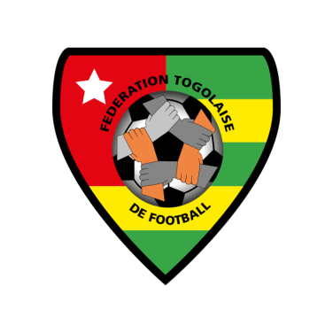

TogoThe Togo national football team represents Togo in international football and is controlled by the Togolese Football Federation. The national football team of Togo made their debut in the FIFA World Cup in 2006.
-

Emblem
-

Nickname(s)
Les Éperviers
(The Sparrowhawks)
- 
Association
Fédération Togolaise de Football
FTF
-

Confederation
CAF
Africa
-

FIFA code
TOG
-

Appearances
1
first in 2006
-

Best result
Group Stage
2006
2006
-

Otto Pfister
Head Coach
(Germany)
-

1. Ouro-Nimini Tchagnirou
Goalkeeper
Born - 31 December 1977
Aged 28
Caps 9
Club - Djoliba (Mali)
-

16. Kossi Agassa
Goalkeeper
Born - 2 July 1978
Aged 27
Caps 49
Club - Metz (France)
-

22. Kodjovi Obilalé
Goalkeeper
Born - 8 October 1984
Aged 21
Caps 0
Club - Étoile Filante
-

2. Daré Nibombé
Defender
Born - 16 June 1980
Aged 25
Caps 16
Club - Mons (Belgium)
-

3. Jean-Paul Abalo
Defender
Born - 26 June 1975
Aged 30
Caps 65
Club - APOEL (Cyprus)
-

5. Massamasso Tchangai
Defender
Born - 8 August 1978
Aged 27
Caps 34
Club - Benevento (Italy)
-

12. Eric Akoto
Defender
Born - 20 July 1980
Aged 25
Caps 32
Club - Admira Wacker (Austria)
-

13. Richmond Forson
Defender
Born - 23 May 1980
Aged 26
Caps 8
Club - Poiré (France)
-

19. Ludovic Assemoassa
Defender
Born - 18 September 1980
Aged 25
Caps 5
Club - Ciudad de Murcia (Spain)
-

23. Assimiou Touré
Defender
Born - 1 January 1988
Aged 18
Caps 1
Club - Bayer Leverkusen (Germany)
-

6. Yao Aziawonou
Midfielder
Born - 30 November 1979
Aged 26
Caps 32
Club - Young Boys (Switzerland)
-

8. Kuami Agboh
Midfielder
Born - 28 December 1977
Aged 28
Caps 4
Club - Beveren (Belgium)
-

9. Thomas Dossevi
Midfielder
Born - 6 March 1979
Aged 27
Caps 10
Club - Valenciennes (France)
-

10. Chérif Touré Mamam
Midfielder
Born - 13 January 1978
Aged 28
Caps 39
Club - Metz (France)
-

14. Adékambi Olufadé
Midfielder
Born - 7 January 1980
Aged 26
Caps 24
Club - Al-Siliyah (Qatar)
-

15. Alaixys Romao
Midfielder
Born - 18 January 1984
Aged 22
Caps 11
Club - Louhans-Cuiseaux (France)
-

18. Yao Junior Sènaya
Midfielder
Born - 19 April 1984
Aged 22
Caps 16
Club - YF Juventus (Switzerland)
-

21. Franck Atsou
Midfielder
Born - 1 August 1978
Aged 27
Caps 13
Club - Al Hilal (Saudi Arabia)
-

4. Emmanuel Adebayor
Forward
Born - 26 February 1984
Aged 22
Caps 29
Club - Arsenal (England)
-

7. Moustapha Salifou
Forward
Born - 1 June 1983
Aged 23
Caps 34
Club - Brest (France)
-

11. Robert Malm
Forward
Born - 21 August 1973
Aged 32
Caps 1
Club - Brest (France)
-

17. Mohamed Kader
Forward
Born - 8 April 1979
Aged 27
Caps 46
Club - Guingamp (France)
-

20. Affo Erassa
Forward
Born - 19 February 1983
Aged 23
Caps 6
Club - Moulins (France)